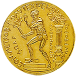

Nikos Chrysogelos
Student, EECS, NTUA
Academic work

High School
I graduated from 52nd General Lyceion of Athens and then I continued my studies at NTUA at the age of seventeen.(2007)
I granted a scholarship of academic merit by Kiprianidis Foundation for my five year studies at the university.
University
Currently I studied in Greece at the National Technical University of Athens.
I have attended many coferences as I am member of EESTEC , an electrical engineering
students' european association.
My research interests are on Renewable Energy , Smart Grids , Power Electronics , Microprocessors in Energy and Energy algorithms.
Research Projects
Implementation of European 7th Framework Research Project - Development of new Transistors and Power inverter using Normally-ON SiC JFETs for PV applications , on this project I worked during the last year of my studies in order to complete my master thesis.
Cern , at Cern I was involved mainly in two projects. The first one has to do with the control system of the new cooling plant of the Tracker of CMS using PLC units. The second was the installation of humidity and temperature sensors in CMS cavern for security reasons. The reading of theses sensors was done by microcontrollers (arduino).
I have participated in IEEE projects conerning:
- Microprocessors in Emergy
- Power Electornics
- CPU simulator
Back